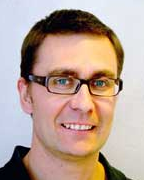

Invited Talk
Soft Software Engineering:
Risks and Proposals for the Future
Robert Feldt, Chalmers University of Technology and The University of Gothenburg

Within the general trend of considering more and more human and “softer” aspects in Software Engineering, there has recently been a strong push for studying the emotions of developers and engineers. In this talk we look at some risks when doing interdisciplinary research involving psychology, behavioural aspects, and affect/emotion of software engineers. Based on our experience from studies in behavioural software engineering, we give some proposals for the future of “soft” software engineering.
Social Media
[Loading Tweets by SEmotion_ws…]